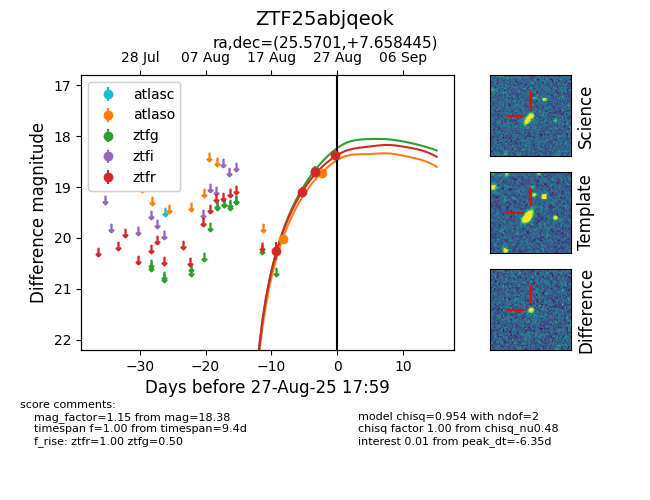

Target ZTF25abjqeok at 2025-08-27 17:59, see:
FINK: fink-portal.org/ZTF25abjqeok
Lasair: lasair-ztf.lsst.ac.uk/objects/ZTF25abjqeok
ALeRCE: alerce.online/object/ZTF25abjqeok
alt names
ZTF25abjqeok (ztf,fink)
coordinates:
equatorial (ra, dec) = (25.5701,+7.65844)
galactic (l, b) = (144.2270,-53.09821)
photometry
last atlaso=18.72, ztfg=18.68, ztfr=18.38
2 atlaso, 1 ztfg, 4 ztfr detections
